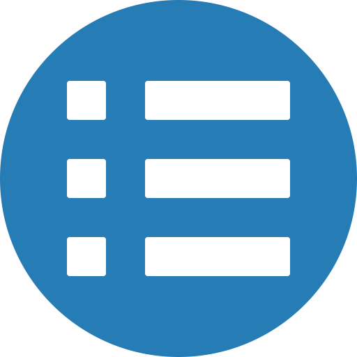

Sayed Ahmad Sahim
 sahim@campus
sahim@campus sahim@github
sahim@github sahim@Linkedin
sahim@Linkedin Education
Education
 Technische Universität Berlin
Technische Universität Berlin
MCS in computer science
Currently Studying
Herat University Afghanistan
BCS in computer science
1,2 GPA, Graduating January 2015
skills
Languages: Scala, Go, JavaScript, Ruby, Python, Java, Hack, PHP, SQL, HTML/CSS
Other:Unix/Linux, Rails, Node.js, React/Redux, Angular, Hadoop, AWS, Cassandra, Functional programming
Projects
Public Transport Berlin
Developer in public transport project where we used heterogeneous components to interact with each other. Three developers team were involved in the project. My team was working on the public transport component with the help of which we could find the best possible route to a location. For the development of this component, we used Java as a programing language with open street map API
Image deployment within Amazon AWS cloud
I was working as a scriptwriter to deploy and configure docker images in the Amazon cloud. In this project, my task was to write a heat template for the given topology. The topology consists of two front-end servers and five back-end servers. The frontend VM was hosting a two-fold replicated frontend HTTP service, while the two backends VMs were hosting a five-fold replicated backend HTTP service. The frontend service was exposed to clients and load balanced by a Docker networking feature. The front-end services were forwarding incoming requests to one of the backend VM using a hash-based load balancing strategy. Inside the backend VMs, Docker networking was again loaded balancing the incoming requests between the different backend service instances.
Work
Lecturer at Kandahar University
Kandahar UniversitySpring 2016
Lecturer at Computer Science Faculty
Responsible for teaching Java programing language courses from basics to advance. The content of the course included basic programming for beginners, Object-Oriented programming, Java Swing GUI programming, threads and advanced exception handling in Java. Generic programming, sequential and associative data structures, classic data structures, sorting and searching, exception handling, database programming with JDBC, networking programming GUI development using Swing and an overview of Multithreading. The course also explores Java Applets, web applications (Servlets), advanced input and output classes, more advanced strings, regular expressions, Java graphics, and finally, closing off with a look at using Eclipse and IntelliJ Idea IDE.
System Administrator
Herat University AfghanistanSpring 2015
I worked in a group of four people for the system administration in the network operation center NOC. I was responsible for the installation and maintenance of Linux servers. The Linux servers were hosting squid proxy traffic shaping for the entire university. We were responsible for configuring the above services. Filter the contents of the Internet, provide a fixed data quota for each user. For the user management, we were using Samba and LDAP directory. We also configured Samba as a primary domain controller. Finally, we were responsible to regularly backup the server, in case of disaster we were able to have zero downtime.
Network Administrator
USAID and USA embassy joined project Kandahar university Spring 2010
In the project, I was working as a network administrator. I was responsible for designing network topologies, providing Internet connectivity to lecturers and university staff, deploying Windows operating system to the university computer labs. Filtering Internet contents according to the university policy. For the OS distribution, we were using windows deployment service WDS on windows server 2008. For the Internet content filtering, we were using Kerio Winroute proxy server. Kerio has great futures for controlling and providing Internet to a campus-based network.
Network Administrator
Afghan TelecomWinter 2009
I worked with Afghan Telecommunication company in Afghanistan. It is a governmental company, providing DSL and telephony services across the country. I was responsible for controlling the network connectivity for four provinces in the south of the country. We were using Ineternet